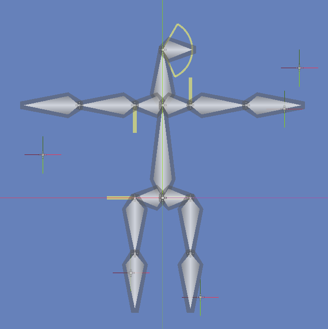
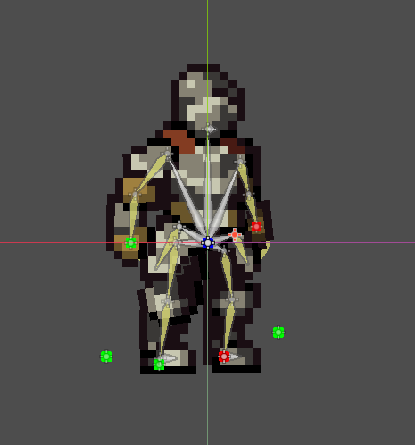
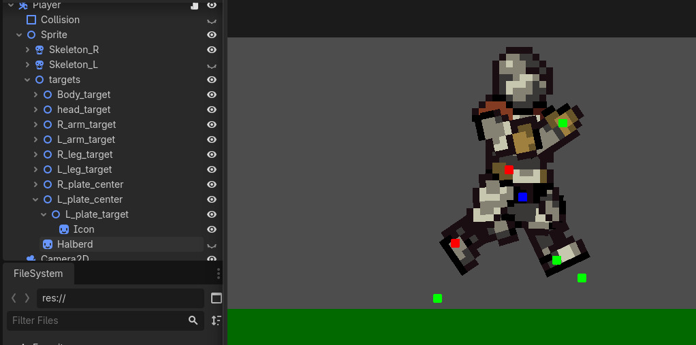
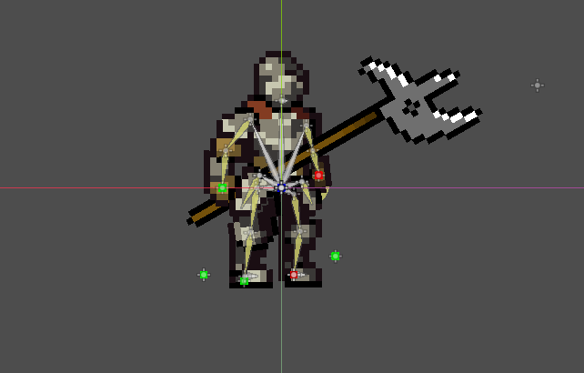

DYNAMIC ANIMATION
Some experimentation with bone based animation, procedural/dynamic animation, IK etc... This was made, as a compensation for my lack of skill as an actual animator.




Some experimentation with bone based animation, procedural/dynamic animation, IK etc... This was made, as a compensation for my lack of skill as an actual animator.



